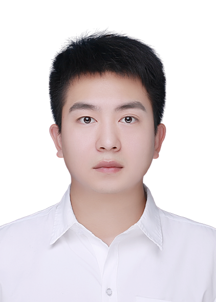

Yurui Zhu朱禹睿Ph.D Candidate
University of Science and Technology of China, Anhui, China |
 |
I am currently a PhD student in University of Science and Technology of China (USTC). 2022
Enhanced Coarse-to-Fine Network for Image Restoration from Under-Display Camera
JPEG Artifacts Removal via Contrastive Representation Learning
Single Image Shadow Detection via Complementary Mechanism
Event-driven Video Deblurring via Spatio-Temporal Relation-Aware Network
(CVPR) (Oral)
Bijective Mapping Network for Shadow Removal (CVPR) (Oral)
Efficient Model-Driven Network for Shadow Removal 2021
Multifocal Attention-Based Cross-Scale Network for Image De-raining (Oral)
Rain Streak Removal via Dual Graph Convolutional Network 2020
Learning Dual Transformation Networks for Image Contrast Enhancement
My research interests focus on Computer Vsion, especially low-level vision tasks, advised by Xueyang Fu,
Zheng-Jun Zha, and Qibin Sun. I am currently a research intern at Shanghai AI Laboratory, advised by
Xiaowei Hu.
Publications [Google Scholar]
Yurui Zhu, Xi Wang, Xueyang Fu, and Xiaowei Hu
1st Mobile Intelligent Photography & Imaging Workshop @ ECCV 2022
[code]
Xi Wang, Xueyang Fu, Yurui Zhu, and Zheng-Jun Zha
European Conference on Computer Vision (ECCV)
[code]
Yurui Zhu, Xueyang Fu, Chengzhi Cao, Xi Wang, Qibin Sun, and Zheng-Jun Zha
ACM International Conference on Multimedia (ACM MM)
[code]
Chengzhi Cao, Xueyang Fu, Yurui Zhu, gege Shi, and Zheng-Jun Zha
International Joint Conference on Artificial Intelligence (IJCAI)
[download]
[code]
Yurui Zhu^, Jie Huang ^, Xueyang Fu , Feng Zhao, Qibin Sun, and Zheng-Jun Zha (^ : joint first authors )
IEEE Conference on Computer Vision and Pattern Recognition (CVPR)
[paper]
Yurui Zhu, Zeyu Xiao, Yanchi Fang, Xueyang Fu , Zhiwei Xiong, and Zheng-Jun Zha
AAAI Conference on Artificial Intelligenc (AAAI)
[paper]
[download]
[code]
Zheyu Zhang, Yurui Zhu, Xueyang Fu, Zhiwei Xiong, Zheng-Jun Zha, and Feng Wu
ACM International Conference on Multimedia (ACM MM)
[paper]
[download]
Xueyang Fu, Qi Qi, Yurui Zhu, Xinghao Ding, and Zheng-Jun Zha
AAAI Conference on Artificial Intelligence (AAAI)
[paper]
[download]
Yurui Zhu, Xueyang Fu, and Aiping Liu
IEEE Signal Processing Letters (SPL)
[paper]
[download]
[code]
Honors & Awards